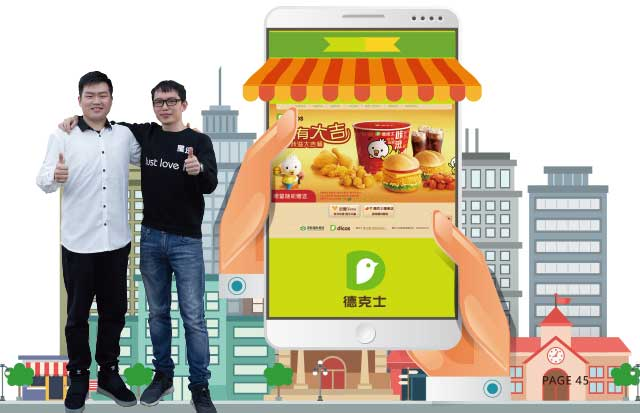
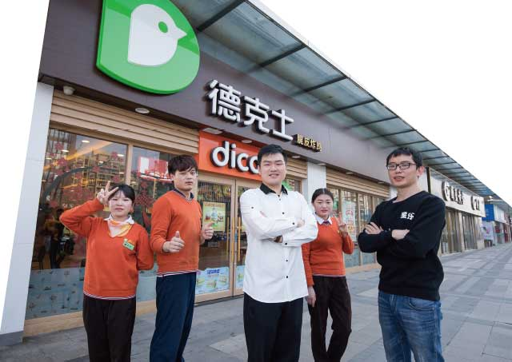

王玺祖籍三晋大地——山西。自古以来，山西民风纯朴、忠厚老实，山西“晋商”传给后代的古训是“说老实话、办老实事、做老实人”的做人原则。所谓聪明人做小买卖，老实人做大买卖，颇有大智若愚的味道。王玺在家族经商氛围的熏陶下，2015年9月加盟了德克士，尚未三十而立的他现在已是两家德克士门店的战略加盟总经理。从搭建外送平台起家，到加盟餐饮业，王玺有着商人的敏锐眼光。
出于什么原因会做外送平台？又怎么转型到快餐业？
当饿了么这些外送平台还没兴起时，我从美团团购就联想到外送平台。因为我喜欢宅在家，三餐经常需要点外卖。那我就在想，订购外卖最原始的方式是打电话，那时候团购越来越受消费者喜爱，那么我能不能结合两者，开启一个外卖订购平台呢？
做了外卖平台一段时间后，因为与很多餐饮行业的商家接触，加之家里人了解过德克士的加盟，在山西那里，德克士开得也挺好，比麦当劳之类的经营还好。家人就建议我去杭州了解下。来杭州与经销商沟通了近5个月，我就决定加盟了（杭州五洲店）。同年11月加盟了第二家店（杭州星耀城店）。
外送业务管理需要做好哪些方面？
由于对外卖行业的了解，加入德克士后，我们的外送业务也开展得如火如荼，我和店长商量在线上开展外卖业务。主要从消费者的角度考虑，每个人都希望一下单就能尽快吃到热腾腾的快餐。我们会以最短的时间将外卖送到消费者手中，抓住消费者心理，同时也要保证质量。外送业务主要与第三方快递合作对接为主，但今年更想招募自己的外送员，加快外送效率。
与竞争对手相比，来店的消费人群有什么不同？
由很多80后基本上是吃肯德基、麦当劳长大的，消费已经形成了一个特定的习惯，而德克士更多的目标应该放在更年轻的消费者身上。目前我们的消费人群主要集中在15-40岁，随着消费人群的年轻化，品牌的一些宣传手段和方式以及所用的媒介也需要适当更新，抓住年轻消费人群的敏感点。
加盟以来有没有遇到瓶颈？
现在我们就面临着成长期的瓶颈，就是没法让餐厅做得更好，没有达成预设定的目标。而竞争对手的产品讯息、促销活动等覆盖到消费者的面更广也更深。在宣传上，加盟店自己做广告是比较难的，一方面广告的成本高，另一方面资源比较少、渠道也比较少，到达面也就比较狭窄。更希望总公司能够把德克士打造成一个相对而言比较大的品牌。
我认为麦当劳十元巨无霸的出现，让很多白领阶层对这个价格产生兴趣，哪怕平常不去吃，但是看到这个价格也会忍不住想去尝试。这样一来它店面的知名度和人流量就随即加大。哪怕十元汉堡不挣钱，但是能吸引大量人流，那这个活动的推出就是成功的。我们也想打价格战，推出类似于巨无霸的低价汉堡，但是我们可能没有办法达到那个平衡点，因为我们的受众人群相对较窄，我们积累的粉丝数有限。我们想做低价，可是我们推出去如果只覆盖一万人的话，进店消费人群可能只有几百，这就达不到一个比较好的平衡点，可能需要品牌更大的推广。
而我们能做好的就是售卖和服务，但仅依靠售卖和服务来达到一个营业额的大幅度增长是不大可能，它只能说是辅佐手段。同时餐厅遇到瓶颈的时候员工发展也会相应受到限制。最近我们自己也在从各个方面去寻找方法去改变餐厅的现状，比如进行促销活动。目前需要提升自身的不足，将以门店销售为主，外送为辅。更想回归餐饮本身，在实体店为顾客提供更好的服务和体验，大部分顾客来餐厅堂吃是希望得到一个周全的服务。
关于德克士品牌形象的建立，
可以做哪些方面的工作？
在树立品牌形象活动方面，我们也在做，但我认为单靠加盟店很难达到品牌建立的效果，希望以公司的力量去实现。我们会不定时地做一些类似家庭聚会这种活动，一开始只是单纯地吸引消费者来到店面消费，但慢慢发现，一些来到我们店内参加活动的小朋友并不知道德克士，他只知道肯德基，甚至有时在德克士也会说成在肯德基。所以说品牌效应是一个长远的过程，可能这些小孩成为德克士的忠实消费者还需要十年甚至更久，但我认为品牌应该从现在做起，抓住消费者心理，让许多附加的活动根植于消费者心中，形成产品文化。
在管理上有什么特别之处？
食安方面如何努力做到至臻至善？
店长是店面的主心骨，执行主要靠店长和职业经理人。我主要是制定大方向比如宣传活动、以什么方式服务或者有哪些值得改进的地方，偏向于战略策略的把控。我也不会长时间在店里守着，但是会不定期来查看，静静地坐着观看店员的一些服务、操作流程、需要注意的问题等等。同时我会去关注竞争对手，测算他们的人流和一些日常管理。如果在竞争对手中间看到一些好的管理制度或者服务，我们就回到自己店面去查漏补缺。
上次和同事一起去观察一家麦当劳餐厅，店面的点餐、出餐、取餐，整个流程我们觉得很好。正值就餐高峰，但他们只有一个收银员，一小时间收银员所接待的客流量很大，而且一个人解决掉整个排队的高峰，同时不会引起客诉和反感。出餐也很方便，一个人点餐旁边同事帮她备餐，取餐叫号使用电子屏显示，加快工作效率。而我们一个员工根本完成不了这么大的工作量，不单单是员工的操作流程不够熟悉，还有就是我们收银机上东西太多、太杂。一旦更新，按键的位置排序就有改变，需要收银员再熟悉一遍，那就会直接影响员工的点餐速度。不过，现在有了第三代收银机，现状会有改善。在尽可能的情况下，我们要提高员工的点餐速度，并搭配备餐员，让他们配合去解决高峰时段的工作。
我会主动向竞争对手学习，希望从他们身上学到更多更好的东西来帮助我去管理，好的方面就用到自己餐厅里去。但是我们现阶段从别人家学来的东西可能没有特别大的作用，因为对于我们来说，没有更好的能力与资源去完成它。同时我认为品牌形象的建立对品牌的意义比对单店的意义大得多，而我更加关心的是单店的销售和消费者印象，这是我认为的单店和品牌之间的区别。
食安是店面的生命线，保证信息从上至下的统一性，并遵守规则，但这些规则并不需要死记硬背。部门间的分工合作很重要，大部分干部都是从员工上来的，技术层面没有问题但是可能管理层面有所欠缺。所以了解部门间的分工并学会各司其职很重要。
积分对于日商来说有没有帮助？
我认为集享卡APP针对德克士产品太少，很少有优惠券和折扣。界面的产品也很多，消费者很难一下子找到德克士。而在麦当劳APP 下单相对来说就简单很多，操作流程简单，功能信息明了，让消费者一眼就知道自己要什么，并有相应的优惠，比如你提前在APP上订餐，就能获得减免，提前付款也能获得减免。来不来店是消费者的事，但是对于加盟者而言，这是落实到口袋里的效益。
王玺自称是一个多重性格的人，该工作时认真工作，休息时就好好玩。对于员工，他也是这样要求。“希望员工不要把炸鸡这些工作看得太枯燥无味，要想方法玩起来。我跟他们说，把工作看成游戏中的打怪一样，能快速地做好工作又不会觉得无聊，”毕竟是年轻人，王玺也有活泼的一面，“员工应该具有正能量，因为负能量传播很快，会影响其他人，我认为这不利于一个门店的长期发展。更加希望员工把工作当成一项娱乐，开开心心工作，能够抗住顾客的投诉、抱怨等压力，同时也不害怕一些顾客的不满意，尽力做到最好就可以。”正如很多加盟伙伴所言：“餐厅就像自己的孩子，我们希望他越来越好。”王玺也努力坚守着：“餐厅是自己开出来的，无论好坏与否，都要坚持下去。”
“行路难！行路难！多歧路，今安在？长风破浪会有时，直挂云帆济沧海。”祝愿王玺早日度过瓶颈期，踏浪而行。